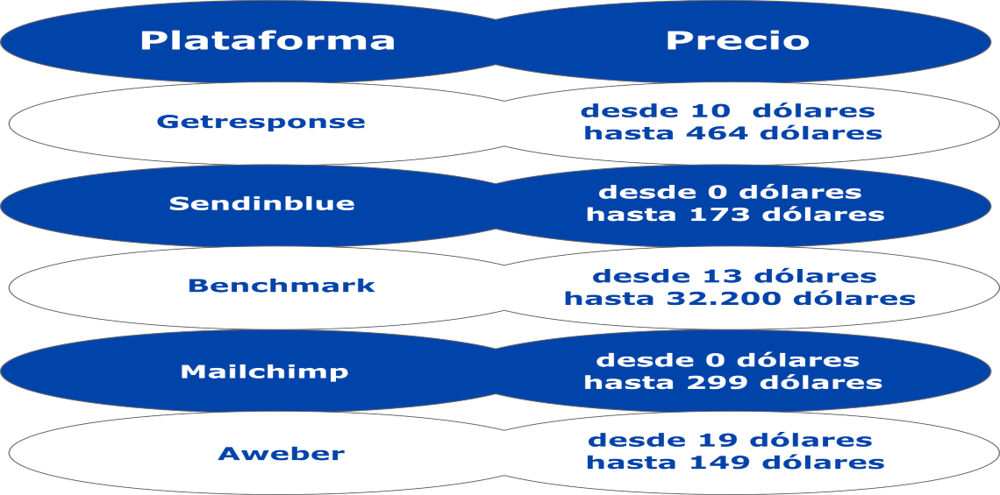
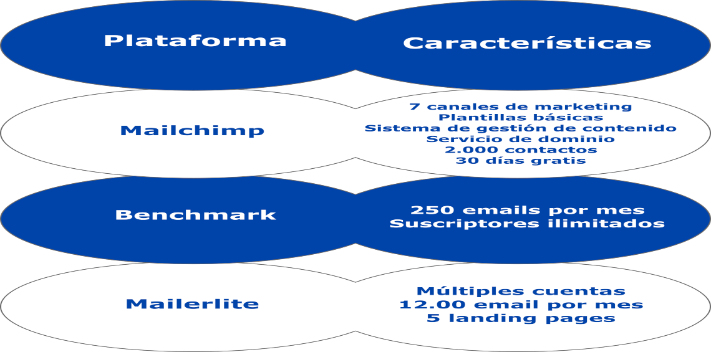

¿Qué es un Auto Respondedor? Conoce cómo usarlo.
*¿Qué es un auto respondedor?
*Ventajas de un auto respondedor
*¿Dónde puedo conseguir un auto respondedor?
*¿Hay auto respondedores gratis?
*¿Cómo usar o crear un auto respondedor?
*Lo que no debe faltar en tu secuencia de auto respondedor
*Lo que no debes hacer
Es una especie de robot que te ayuda a responder y enviar correos con un tema específico. Es una serie de correos electrónicos que se envían de manera automática a personas que pidieron cierta información.
Un robot no se cansa, no duerme ni descansa, por tanto puede responder el día que quieras y a la hora que pidas. Es un vendedor que trabaja de las 24 horas del día, los 7 días de la semana.
Algunas personas creen que al tener un auto respondedor, dañará el negocio porque no será una comunicación natural.
Sin embargo, a pesar de ser como una máquina automática, tu la puedes configurar y personalizar como quieras y cuántas veces quieras.
No te preocupes al pensar que integrando un auto respondedor no será lo mismo que responder uno a uno a tus clientes.
Con un auto respondedor te ahorrarás mucho trabajo, puedes ponerle toda tu esencia para que siempre parezca que eres tú quien les responde.
¿Por qué necesitarías un auto respondedor?
Si tienes mucho trabajo y quieres clonarte, lo necesitas. Si empezaste un negocio y quieres resultados lo más rápido, lo necesitas.
Si quieres escalar tu negocio, lo necesitas. Tienes muchos correos por responder a diario, lo necesitas. Eres vendedor, lo necesitas.
En fin, todos queremos tener menos trabajo y ganar más dinero, poder hallarle solución a nuestros problemas y estar tranquilos. Entonces, tenemos que reconocer que, en ocasiones, solos no podemos con todo al mismo tiempo.
Ésta estrategia de marketing de respuestas automáticas ayudan a simplificar tu vida, a tener mejor distribución del tiempo, a planear mejor y ser más efectivos.
Ventajas de un auto respondedor
Ahorras tiempo. Puedes dedicar más tiempo a otras tareas o actividades.
La lista de correo crece rápidamente.
Sistematiza procesos. A medida que crezca será mucho más eficiente, ya que hay procesos que están registrados y automatizados.
Generas clientes potenciales. Con auto respondedor puedes ver cómo interactúan con el sistema, si un precio funciona mejor que otro. Puedes estudiar a tus clientes y sus tendencias.
Puedes dividir o segmentar el grupo de clientes al cual quieres responder.
Creas un canal de comunicación permanente. Estás conectado con tu público todo el tiempo.
Se crea una recordación de marca.
Aumenta tu reputación al ser rápido en responder y al brindar contenido de valor.
Es económico. Existen algunos sistemas gratuitos, sin embargo hay otros a muy buen precio.
Aumenta tus ventas. En tus ingresos se verá reflejado el resultado de los auto respondedores.
No sólo sirve para vender. Puedes utilizarlo para automatizar encuestas, testear lanzamientos, servicios post-venta, entre otras más.
¿Dónde puedo conseguir un auto respondedor? ¿Cuánto cuesta?
En marketing solemos utilizar unos respondedores muy famosos. Te mostraré 5 de muchos.
¿Hay auto respondedores gratis?
Recuerda siempre que todo depende de tus objetivos y de lo que quieras lograr.
Si apenas estás empezando y tu página tiene pocos visitantes, sí te recomendamos usar uno gratuito, así pruebas cómo se usa un auto respondedor.
Pero si tu negocio es grande y quieres escalar al máximo, tienes que adquirir un auto responder con cantidad de correos más grandes y funciones más específicas.
Te daremos los 3 mejores auto respondedores gratuitos. Vale la pena iniciar con uno de estos para probar el sistema. Si tu eres la persona encargada de los email, lo mejor es que pruebes en éstos.
¿Cómo usar o crear un auto respondedor?
Debemos empezar por planificar tus estrategias de auto respondedor. Respondamos estos puntos:
¿Cuál es el objetivo de la auto respuesta?
¿A qué parte de la lista te diriges?
¿Cuántos mensajes de correo electrónico quieres enviar al día, a la semana y al mes?
¿Cómo estructurar el contenido y crear un equilibrio entre contenido de valor y ventas?
Después analizaremos las respuestas y, con base en ello, empezaremos a crear nuestra estrategia.

Existen muchas más plataformas con una opción gratuita, sin embargo la mayoría de éstas te permiten ingresar solo si registras tu tarjeta de crédito.
Esto quiere decir que a los 30 días te empezarán a cobrar otro plan. No confíes en todos los planes gratuitos de 30 días.
Escribe cuál es el objetivo final de tu estrategia. ¿Qué quieres lograr con lo que vas a ofrecer?
*Haz una lista de objetivos, miedos y aspiraciones y retos del cliente. Una vez tengas claro ésto, saldrán los temas que se enviarán por email.
*Piensa en las barreras que tus clientes puedan tener para adquirir tus productos. Haz una lista con los posibles obstáculos que tendrías.
*¿Cuáles son los factores que tu cliente tiene que conocer para que quiera trabajar contigo? Escribe los ejemplos o casos de éxito que existen, casos de estudio, preguntas y respuestas. Así todo estará muy claro. No tendrá opción y te escogerá.
*Recopila los recursos que tienes. Recolecta post, videos, audios, emails, links, y todo lo que tengas que se relacione con los temas que quieres tratar en la estrategia.
*Clasifica y divide la información que tienes, los temas principales y lo que se va a escribir de cada uno.
*Determina cuántos emails va a tener la estrategia.
*Fija la frecuencia con la cual serán enviados los emails.
*Reserva cierto tiempo al día para escribir tus emails, ¿2, 3 horas? Trata de no gastar más de 4 horas en ésta tarea.
*Decide si el contenido será público o privado.
Lo que NO debe faltar en tu secuencia de autorespondedor
Crea expectativa: crea vínculos entre tus correos electrónicos. Si tienes una super noticia que saldrá en cierto tiempo, cáusale al cliente misterio y ganas de saber qué es lo que viene. Así estará atento y lo tendrás muy conectado.
Suspenso: parte del misterio es el suspenso, por tanto no lo des a los clientes todo al mismo tiempo. Dale lo que quieres, pero poco a poco. Déjales la duda de lo que habrá en el siguiente email.
Cumple lo que prometes: si bien es necesario generar intriga y curiosidad, no causes expectativa por aquello que no vas a ofrecer. Esto no solo causará desconfianza, sino creará fastidio de parte de la audiencia.
La temática: recuerda que hay temas que despiertan más interés que otros. Crea títulos atractivos y que den ganas de abrir el correo inmediatamente.
Quién lo envía: usa siempre tu nombre personal. Muchas personas ven nombres corporativos y eliminan los correos, quitan la suscripción o, mandan los correos a “no deseado”.
Asunto: un buen asunto es el que obliga al cliente a dar click en el email que enviaste.
Cuenta historias: puedes hablarles en un correo sobre tu gran experiencia. También se vale contarles anécdotas que causen enseñanzas, claro siempre enfocado a tu negocio.
Contenido de valor: bríndales lo mejor de ti, es decir, los mejores blogs, los mejores videos. Dale a tus clientes todo aquello que les sirva, no solo como cliente sino también como persona. Hazle saber que piensas en él siempre.
Emails cortos: un email largo suele tornarse aburrido, y por ende lo pospone. Un email corto podrá leerlo en poco tiempo. Y, si hay algún contenido que deba redirigirse a otro link, cáusale la entera necesidad de que lo abra.
Es una conversación: recuerda que estás dialogando con tu cliente, y una conversación tiene opinión, atención, retroalimentación y escucha.
En los emails tienes que hacerle saber a las personas que los estás leyendo y sabes cuáles sus necesidades.
Analiza: los sistemas de autorespondedor te dan estadísticas de tu actividad, aprovecha ésto y replantea y modifica cualquier cosa que pueda ser una barrera.
Lo que NO debes hacer
No usar un autorespondedor porque no sabes cómo usarlo o porque la tecnología y tu no son buenos amigos.
Si es por esa razón que no quieres usarlo, mira el video de cómo utilizar esta herramienta y de seguro aprenderás en menos de lo que esperas.
Además, cualquier proveedor de autorespondedor te dará la asistencia que necesites, para eso pagas.
No termines tu autoresponder con un email de bienvenida. Generalmente, el cliente necesita entre 7 y 10 correos para considerar una comprar.
Lo mejor es darle un poco de espera, no se trata de ser un vendedor fastidioso.
No envíes más de un email por día. A una persona del común le llegan aproximadamente 10 correos al día, mínimo.
Muchos no revisan frecuentemente el correo, entonces no le llenes la bandeja de entrada a tus clientes, si lo haces te irás para Spam.
No te estreses por las bajas. las bajas son normales en el campo del email marketing.
Si alguien no quiere tu contenido y retira su suscribe, no es porque sea malo, tranquilo, es solo un cliente no interesado que podría generarte malos resultados si sigue suscrito.
No seas tan agresivo con tu venta. Cometerás un error si inicias vendiendo sin que tu cliente sepa quién eres. Las buenas relaciones se cultivan, si éstas se cuidan los frutos serán muy buenos.
Sé más empático y, empieza por darle contenido que pueda necesitar, la idea es que la venta sea más indirecta que directa.
No se puede complacer a todos. si atiendes a uno por uno, con uno y otro problema, pasarías toda la vida escribiéndoles y respondiéndoles. Omite ciertas cosas, y verás que el trabajo es más llevadero.
Si quieres saber más a fondo y todo acerca de los email automáticos, mira el siguiente artículo de email marketing.